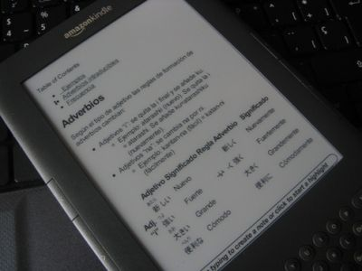
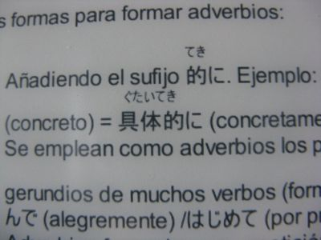

Kindle 3 review... ish
Hace una semana (más o menos) recibí mi Kindle v3 Wi-Fi. El aparato es lindo, con estética bien cuidada, liviano, con un par de falencias en el diseño y funcionamiento/configuración.
Caracteristicas
Asi rapidito:
- 19cm de alto, 12.3cm de ancho y 0.85cm de grosor
- Pesa 241 gramos
- Pantalla de 6", 600x800 pixeles.
- Tiene 3GB para el contenido (1GB mágico)
- Formatos: AZM, TXT, PDF Audible (AA, AAX), MP3, Mobi (DRM-free), PRC, PNG...
- Otras que no importan.
Recepción
Vamos con lo primero, el momento de la recepción:

Caja

Frustration-free certified!

Momento de despertar, sr. Kindle

Quick start guide, me gusta el diseño de las letritas

Start guide en acordión (notese el diseño de las letritas)

Cargador en cucha

Cargador y cable usb haciendo cosas 16+
El packaging se siente como reciclado/enviroment-friendly. Como vienen algunos celulares ahora, que me parece muy bien.
En la mano se siente bien y livianito. El color es grafito, menos mal porque si hubiese sido blanco hubiera comprado Sharpies grises y pintado. Odio un poco las cosas blancas a no ser que tengan la terminación glossy que ahi lo adoro.
En la parte de abajo tiene el botón de volumen, 3.5mm head-phone jack, micrófono (!), usb (carga y paso de datos) y slider para prender/apagar/reiniciar/desbloquear que también indica si esta prendido (luz verde) o cargándose (luz naranja-similar).
Atrás tiene los parlantes + logo + información varia + mucho espacio en gris (tarararan pushhh).
Botones
Los botones del teclado tienen tamaño aceptable como para escribir notas (que para eso estan). Un problema del teclado es el layout; por alguna razón en vez de poner . pongo m, y en vez de n pongo m, pero solo son con esas tres teclas.

Close up del teclado
Otra cosa que encontré "mal" es que no tiene un botón para la coma cual tranquilamente podría ser activado apretando alt+punto, asi se le da un uso a alt que no funciona a no ser que se "jailbreakee" o no me di cuenta en donde usarlo.
El D-Pad: el botón de OK es bastante grande pero los botones direccionales no me gustan mucho, podrian haberlo hecho un poco más regordetes como para sentir que los estas realmente aprentando sin miedo de pifiarle.

Close up del D-pad
Para poner números, coma, y otros simbolos se aprieta la tecla Sym. Me parece bien que hayan puesto los numeros ahi ya que casi nunca se usan pero la coma ahi no. Eso si, para poder ingresar caracteres estilo "ñ", "á", "ü" y demas, hay que ponerle un hack. Malditos yankees.
Otros botones que estan mal ubicados son los de cambiar la página (adelante y atrás). Estan justo en el medio de los laterales donde se suele agarrar el aparato. Tendrian que haberlos hechos más chicos y del mismo tamaño (el de siguiente es más grande/largo).
Reading time/testing
Pantalla: teniendo en cuenta que es la primera vez que veo "en vivo y en directo" algo con e-Ink se ve bien; tanto texto como imágenes.

Close up de pantalla a las letras
Dentro de las opciones del documento (apretando el botón Aa) se puede
cambiar el tamaño de letra, font-weight/estilo de letra, contraste,
espacio de linea, palabras por linea, si queres que te lea el documento
(no lo probé) y modo de rotación. Estas opciones sirven para archivos
.mobi y .txt (y seguro AWZ). Cuando ves PDFs solo tenes la opción de
zoom, contraste y rotación.
Se puede poner un musica en background mientras lees. Sirve para cuando estas estudiando idiomas por ejemplo: pones el audiolibro, pones el texto y seguis con la mirada (no lo probé).
Una de las razones por la que me compré el Kindle es para poder estudiar japonés (con todos los libros y eso), eso quiere decir poder leer mis notas en la wiki que tengo.

Uno de mis mayores miedos era el poder leer furigana (Guia fonética).
Bien, para poder usar el Sr.Furigana si o si tengo que usarlo en PDF.
Asi que mis notas de japonés se tienen que pasar a un HTML in one page y
a PDF O "PDFs por sección" para poder leerlas con furigana. Si no puedo pasarlo a mobi o a
txt. Estuve haciendo pruebas y:
- mobi + furigana -> kanji y al lado la lectura = no gracias
- html con extensión txt: kanji + furigana = desaparecido o no existente

Luego de jugar con los formatos me decidi conectarme a internet. Acá lluvia de "problemas".
Conexión Wi-Fi
Primero, me tuve que hacer cuenta en Amazon porque sino no podia crear colecciones ("categorias", cosa de organizar mejor el menú de selección) ni cambiarle la hora ni nada. O sea, si no te registras con Amazon y linkeas solo tenes 1 pantalla de opciones que no te sirve mucho. Si te linkeas con la cuenta tenes mas, incluyendo conectarte a Facebook y Twitter para compartir notas y lo que seleccionaste.
Estuve 30 minutos tratando de conectarme con mi router: ingresaba contraseña -> fail, ingresaba contraseña -> fail, ingresaba contraseña -> fail, ingresaba contraseña -> fail, ingresaba contraseña -> FAILure.
Pensaba que era por el tema de la seguridad, que no aceptaba
WPA-PSKloquesea, iba a cambiarlo pero me dije nahh no puede ser. Tiene que aceptar eso
asi que decidi buscar la solución y, oh! es un
"bug".
Para resolverlo:
- Ir a scannear las redes de Wi-Fi e ingresar a mano el
SSIDde tu red. - Conectarte (sin poner contraseña). Dice que no se puede conectar.
- Vas a la opción de setear manualmente la red.
- Pones el
SSID(creo que aparece automaticamente), configurás el resto y recién ahi pones la contraseña. - Conectarse.
Browser y Javascript
Ultimamente cualquier navegador de "cosas mobiles" acepta Javascript pero queria ver si te aceptaba el "heavy Javascript"/jQuery y que ande el script este que te toma las letras del teclado. Para mi sorpresa, funciona.
Me encantó. Parece espectacular. Te felicito por la adquisición.
Tengo ganas de comprarme uno ahora u_u’
Me encantó el review! Super completo y descontracturado.
Con muchas fotos, como me gusta e info util.
Bien “conversado” y ameno para leer. Me terminaste de convencer, debería tener uno. Que bueno que te va a servir para estudiar furigana y kanji. :)
Valió la pena la espera!!!
Muchas gracias!
Excelente! me sorprendio el motivo por el que te lo compraste :D
No conocia mucho del kindle… que mal lo de la conexion wi fi.
Muy copado el aparatejo. Me parece un invento genial para ahorrar papel en libros. Si yo leyera me compraría uno sin dudarlo.
Ahora que ya la gente no compra libros tengo que seguir con mi campaña en contra de las impresoras, invento del diablo, y que se mande TODO por mail.
Gracias por sus comentarios! :D
@ asur2004 : no es taaaaan completo. Dejé un par de cosas afuera porque me acordé tarde y no sabia donde meterlos XD
@ Raul: Digamos que es una mezcla de todo: muchos libros para leer + japonés + manga/comics…. pero lo de japonés influyó mucho n.n
@ Hallecsyz: temo desilucionarte, pero lamentablemente hay cosas que se tienen que imprimir si o si =/ pero si hablas de TPs sip, es al pedo. Yo tenia una profe que pedia el codigo del programa impreso para “Hacer correciones”… mandale los putos comentarios y listo! no me hagas imprimir 3 paginas al pepe!
@ NicolasJEngler no te iba a responder pero como quedaste ahi solito y me dio cosita te escribo una respuesta n.n